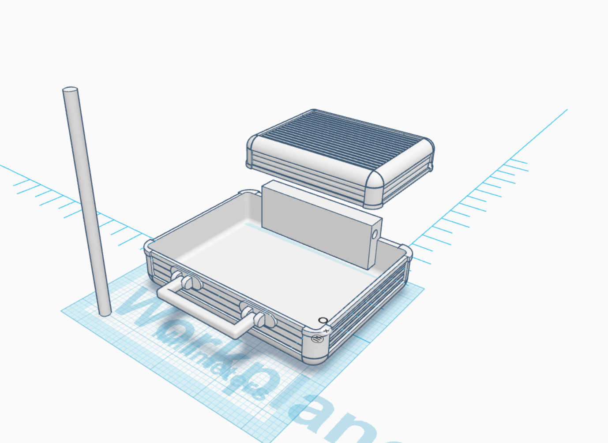
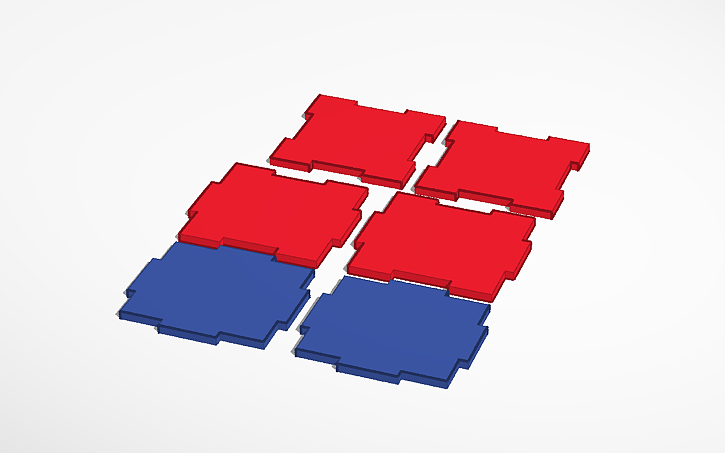

Repositorio y archivos.
Aquí se encuentra el repositorio de mis proyectos escolares.
-

Modelo 3D
El modelo 3D de prueba, el objetivo es lograr que tenga partes que se muevan sin romperse.
Publicado: 27/10/2025 -

Cubo: Corte 3d
El cubo de MDF cortado, todo con solo 6 piezas.
Actualizado: 28/10/2025 -

System Status & Diagnostics
Estado nominal del equipo. Revisión de cartas de navegación y lecturas gravimétricas para el próximo salto de la nave.
Revisión: 2025.02.01
Modelo 3D - Prototipo de Portafolio
El objetivo es crear un modelo en 3D que podamos imprimir, no solo para conseguir algo funcional, sino para aprender el proceso de impresión de piezas.
El día 17 de septiembre, se empezó con un modelo de prueba de un astronauta, que serviría como muñeco con partes móviles, pero se descartó al ser muy pequeño. En su lugar, creé un portafolio con el objetivo de guardar cosas adentro, fácil de imprimir y de armar.
Después de imprimir en 3D, junté los modelos y coloqué un clip para que sirviera como parte movible, permitiendo al modelo abrirse y cerrarse. El portafolio sufrió daños en los costados porque los contornos eran débiles y poco gruesos.
Al final, se hicieron varias pruebas para averiguar si el modelo era funcional. El modelo no cierra completamente; un pequeño error en la impresión colocó una capa más de lo que se debía en el engranaje principal.
Para terminar, el modelo sirve muy bien para guardar artículos pequeños, como monedas, tornillos, clips, piezas pequeñas, etc.
Cubo: Corte de MDF
En este proyecto, se utilizó un modelo en TinkerCad con el objetivo de armar un cubo solo con MDF.
El concepto inicial se pensó en hacer que todas las partes sean simétricas, al hacer esto, fue más fácil el modelar el cubo. Pero la base terminó siendo más grande, siendo un rectángulo.
El proceso de cortado se realizó en la cortadora laser del club de cohetería. Se utilizó MDF.
Se empezó el proceso de armado una vez ya cortadas las piezas, se contaron 6 piezas en total.
Por último, se pegaron las piezas y se formó el cubo.
System Status
All systems nominal. Ship integrity at 100%. Grav-drive spooling is optimal. Reviewing navigational charts for the Alpha Centauri system. Environmental controls are stable, maintaining optimal life support for all crew.
Donec nec justo eget felis facilisis fermentum. Aliquam porttitor mauris sit amet orci. Aenean dignissim pellentesque felis. Morbi in sem quis dui placerat ornare. Pellentesque odio nisi, euismod in, pharetra a, ultricies in, diam. Sed arcu. Cras consequat.
References & Sources
This page is a fan-made UI concept inspired by Bethesda Game Studios' Starfield. All trademarks, copyrights, and intellectual property related to Starfield belong to ZeniMax Media Inc. and Bethesda Softworks LLC.
- Official Starfield Website
- Starfield Wiki (Fandom)
- Eugene Shishkin's UI/UX Concepts (ArtStation) - *Images used in Home tab.*
- Other images sourced from official press kits and promotional materials.
This project is for educational and demonstrative purposes only, showcasing UI/UX design concepts within the Starfield aesthetic. No commercial use is intended or implied.